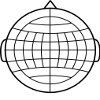
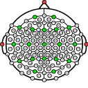
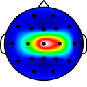

Welcome to EEGtopo.
  Getting Started
Installation
Windows
Linux
Basic Usage
- Start up a terminal (or the command line)
- Change to the location of the binary file
- For a start, lets create an EEG layout consisting of 5 electrodes around Cz.
$ eegtopo -e Fz C3 Cz C4 Pz -o laplacian.pdf
This creates a file, laplacian.pdf, that shows schematically the locations of the electrodes Fz, C3, Cz, C4, and Pz.
For more advanced or fine-grained control over your plots, you will need to create small script files or check out the command line options.